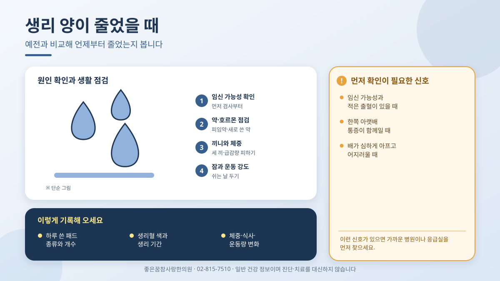

이종호 한의사 감수좋은꿈참사랑한의원 대표원장 (한의사 면허번호 19769)발행 2026-11-26 · 수정 2026-11-26
이 글의 차례
생리 첫날인데 패드를 몇 시간 차고 있어도 거의 묻어나지 않습니다. 예전에는 사흘째까지 중형 패드를 갈아야 했는데, 요즘은 라이너 하나로 이틀 만에 끝나 버립니다. 편해서 좋다고 생각하다가도, 문득 몸 안에서 무언가 달라진 건 아닐까 걱정이 스칩니다.
진료실에서 "생리 양이 너무 줄었어요"라는 말씀을 꽤 자주 듣습니다. 양이 많아서 힘든 분들에 비해 겉으로 드러나는 불편은 적지만, 마음속 걱정은 결코 작지 않습니다. 특히 임신을 생각하고 있거나, 주변에서 생리 양이 적으면 자궁이 약하다는 말을 들으셨다면 더 그렇습니다.
생리 양은 사람마다 다르고, 같은 사람도 나이와 시기에 따라 달라집니다. 그래서 양 자체보다 '예전의 나와 비교해 얼마나, 언제부터 달라졌는지'가 더 중요한 기준이 됩니다. 원래 적었던 분과 갑자기 줄어든 분은 살필 방향이 다릅니다.
이 글에서는 과소월경이 무엇인지, 왜 생리 양이 줄어드는지, 산부인과에서 먼저 확인할 것과 한의원에서 함께 살필 것, 그리고 생활에서 해 볼 수 있는 것을 차근차근 정리해 보겠습니다.
과소월경은 무엇을 말하나요?
과소월경은 생리 주기는 비교적 일정한데, 한 번의 생리 때 나오는 양이 눈에 띄게 적은 상태를 말합니다. 생리가 하루 이틀 만에 끝나거나, 패드에 점처럼 묻어나는 정도로만 지나가는 경우가 여기에 해당합니다.
생리 양을 집에서 정확히 재기는 어렵기 때문에, 진료실에서는 몇 가지 기준으로 대신 가늠합니다. 하루 종일 라이너나 소형 패드 하나로 충분한지, 생리 기간이 이틀 이하로 짧아졌는지, 생리혈 색이 처음부터 갈색에 가까운지 등을 여쭙습니다.
원래 생리 양이 적었고 주기와 몸 상태가 안정적이라면 그 자체로 큰 문제가 아닌 경우도 많습니다. 반면 몇 달 사이에 확 줄었거나, 생리 주기까지 길어지고 있다면 원인을 확인해 볼 필요가 있습니다.
왜 생리 양이 줄어들까요
생리혈은 매달 두꺼워졌던 자궁내막이 떨어져 나오는 것입니다. 그래서 내막을 키우는 호르몬 신호가 약해지거나, 내막이 자랄 바탕이 상했을 때 양이 줄어듭니다.
가장 먼저 확인할 것은 임신 가능성입니다. 임신 초기에 생리 예정일 무렵 적은 양의 출혈이 비치는 경우가 있어, 이것을 양이 적은 생리로 착각하기도 합니다.
다음으로는 호르몬에 영향을 주는 약입니다. 경구 피임약이나 호르몬이 들어 있는 자궁 내 장치를 쓰면 내막이 얇게 유지되어 생리 양이 줄어드는 것이 흔한 변화입니다. 일부 정신건강의학과 약이나 위장약이 프로락틴이라는 호르몬을 올려 생리에 영향을 주기도 합니다.
급격한 체중 감소, 무리한 식사 제한, 강도 높은 운동, 큰 스트레스와 잠 부족은 뇌에서 내려가는 생리 신호를 약하게 만듭니다. 몸이 에너지를 아끼려 생식 기능부터 줄이는 셈입니다. 갑상선 기능이 떨어지거나 지나치게 높을 때도 생리가 달라집니다.
소파술이나 자궁 수술을 받은 뒤 생리 양이 확 줄었다면 자궁 안에 유착이 생기지 않았는지 산부인과에서 확인해 볼 필요가 있습니다. 40대 이후에는 난소 기능이 서서히 줄면서 양이 적어지는 변화가 자연스럽게 오기도 합니다.
한의학에서는 생리 양이 적은 흐름을 몸의 바탕에 따라 나눠 봅니다. 얼굴빛이 희고 쉽게 지치며 어지러운 쪽, 아랫배와 손발이 차고 생리혈이 검붉은 쪽, 마음이 쫓기고 가슴이 답답한 쪽처럼 같은 과소월경이라도 살피는 방향이 다릅니다.
나이와 시기에 따라 달라지는 생리 양
생리를 시작하고 몇 년 동안은 배란이 아직 고르지 않아 생리 양과 주기가 들쭉날쭉한 것이 흔합니다. 이 시기의 적은 양은 대개 몸이 리듬을 찾아가는 과정으로 봅니다. 다만 성장기에 무리한 다이어트를 하거나 운동량이 지나치게 많다면 생리 신호가 약해질 수 있어 식사와 운동을 함께 살핍니다.
출산 뒤 수유를 하는 동안에는 생리가 늦게 돌아오거나, 돌아와도 양이 적은 경우가 많습니다. 수유를 마치고 몇 달이 지나면서 차츰 예전 모습을 찾아가는 분이 많으니, 이 시기에는 회복과 잠을 먼저 챙기시길 권합니다.
40대 중반을 넘어서면 난소 기능이 서서히 줄면서 생리 양이 적어지고 주기도 짧아지거나 길어집니다. 열감, 땀, 잠의 변화가 함께 온다면 갱년기로 가는 변화를 함께 살핍니다. 같은 과소월경이라도 어느 시기에 생겼는지에 따라 받아들이는 무게가 다릅니다.
비슷한 상태와 이렇게 나눠 봅니다
생리 주기 자체가 35일 이상으로 길어지거나 몇 달씩 건너뛴다면 희발월경이나 무월경을 함께 생각합니다. 양만 줄어든 것인지, 주기까지 흔들리는 것인지에 따라 확인할 검사가 달라집니다.
생리가 아닌 때 소량의 피가 비치는 부정출혈은 과소월경과 다릅니다. 생리 예정일과 상관없는 때에 피가 비친다면 자궁경부나 자궁내막 상태를 산부인과에서 확인해 보시길 권합니다.
생리 기간은 짧은데 생리통이 점점 심해진다면 생리혈이 잘 빠져나오지 못하는 상태가 아닌지도 함께 봅니다. 드물지만 자궁경부가 좁아진 경우에 이런 모양이 나타날 수 있습니다.
산부인과에서는 주로 이런 것을 확인합니다
임신 가능성이 있다면 소변이나 혈액 임신 검사를 먼저 합니다. 그다음 초음파로 자궁내막 두께와 자궁, 난소의 모양을 살피고, 필요하면 혈액으로 여성 호르몬, 갑상선 호르몬, 프로락틴 수치를 확인합니다.
소파술이나 자궁 수술 뒤에 양이 줄었다면 자궁 안을 직접 들여다보는 검사로 유착 여부를 확인하기도 합니다. 결과를 들으셨다면 한의원에도 알려 주세요. 원인이 확인된 부분은 산부인과 치료를 먼저 따르고, 한의원에서는 그와 나란히 몸의 바탕과 생활 리듬을 살핍니다.
스스로 점검해 보세요
다음 질문을 떠올려 보시면 진료실에서 이야기를 나누기가 쉬워집니다.
- 생리 양이 줄어든 것은 언제부터인가요?
- 생리 주기와 생리 기간도 함께 달라졌나요?
- 임신 가능성이 있나요?
- 피임약이나 호르몬 장치, 새로 시작한 약이 있나요?
- 최근 몇 달 사이 체중이 크게 변했나요?
- 소파술이나 자궁 수술을 받은 적이 있나요?
- 추위를 많이 타거나, 반대로 더위와 땀이 늘었나요?
진료실에서 자주 듣는 걱정
"생리 양이 적으면 노폐물이 몸에 쌓인다"는 말을 듣고 걱정하시는 분이 많습니다. 생리혈은 노폐물을 내보내는 통로가 아니라 내막이 떨어져 나오는 것이라, 양이 적다고 해서 몸속에 무언가가 쌓인다고 보지는 않습니다.
"임신이 어려워지는 건 아닐까요"라는 걱정도 많습니다. 생리 양만으로 임신 가능성을 판단하기는 어렵습니다. 다만 임신을 준비 중이라면 배란과 내막 상태를 산부인과에서 함께 확인해 보시는 것이 마음을 놓는 가장 좋은 방법입니다.
먼저 이렇게 여쭙니다
처음 오시면 저는 대략 이런 순서로 여쭙니다.
- 예전과 지금의 생리 양, 기간, 주기는 어떻게 다른가요?
- 산부인과에서 받은 검사와 들으신 설명이 있나요?
- 드시는 약과 영양제는 무엇인가요?
- 하루 세 끼를 챙기시나요? 최근 식사량을 줄이셨나요?
- 운동은 어느 정도, 얼마나 자주 하시나요?
- 잠드는 시각과 잠의 질은 어떠신가요?
- 요즘 마음을 무겁게 하는 일이 있나요?
임신을 준비 중이시거나 임신 가능성이 있다면 가장 먼저 알려 주세요. 침과 한약을 정할 때 고려할 것이 달라지고, 필요하면 산부인과와 먼저 상의하시도록 안내합니다.
일상에서 먼저 해 볼 수 있는 것
가장 먼저 점검할 것은 끼니와 잠입니다. 체중 관리를 위해 아침을 거르거나 탄수화물을 지나치게 줄이고 있다면, 하루 세 끼를 일정한 시각에 드시는 것부터 다시 시작해 보세요. 단백질과 철분이 들어 있는 고기, 생선, 달걀, 콩, 푸른 채소를 고르게 드시는 것이 좋습니다.
운동을 많이 하신다면 강도와 양을 한번 돌아보세요. 땀을 흠뻑 흘리는 운동을 매일 이어 가면서 식사는 적게 하면 몸이 생리 신호를 줄일 수 있습니다. 쉬는 날을 두고, 운동한 날은 충분히 드시는 것이 균형을 잡는 데 도움이 됩니다.
잠은 생리 신호를 정리하는 시간입니다. 잠드는 시각을 일정하게 하고, 자기 전 화면 보는 시간을 줄여 보세요. 교대 근무를 하신다면 근무 뒤 잠자는 시간을 가능한 한 일정하게 두는 것만으로도 차이가 있습니다.
아랫배와 손발이 찬 분은 허리와 배를 덮는 옷을 입고, 찬 음료 대신 미지근한 물을 드셔 보세요. 생리 전 일주일 동안은 특히 몸을 따뜻하게 하고 무리한 일정을 줄이시길 권합니다.
철분이 부족하면 쉽게 지치고 머리가 맑지 않으며 손톱이 잘 부러지기도 합니다. 건강검진에서 빈혈 수치를 들으셨다면 그 결과도 함께 가져와 주세요. 철분제를 드실지는 혈액 검사 결과를 보고 내과나 산부인과에서 정하는 것이 좋고, 식사로는 붉은 살코기, 조개류, 시금치, 콩을 비타민 C가 든 과일과 함께 드시면 흡수에 도움이 됩니다.
지친 쪽과 찬 쪽, 쫓기는 쪽
같은 과소월경이라도 진료실에서 만나는 모습은 꽤 다릅니다. 늘 피곤하고 조금만 움직여도 숨이 차며, 앉았다 일어설 때 핑 도는 분이 있습니다. 이런 분은 먹는 양과 잠, 빈혈 여부를 먼저 살핍니다.
아랫배와 손발이 유난히 차고, 생리 첫날 배가 쥐어짜듯 아프며 생리혈이 검붉은 분도 계십니다. 이때는 몸을 차게 하는 생활 습관과 하루의 움직임을 함께 봅니다.
일이나 시험, 관계 때문에 마음이 오래 쫓기고 가슴이 답답하며 한숨이 잦은 분도 있습니다. 이런 분은 긴장을 내려놓는 시간을 하루에 조금이라도 만드는 일부터 함께 정합니다. 한 사람 안에 여러 모습이 섞여 있는 경우도 많아, 진찰을 통해 지금 가장 두드러진 쪽부터 살핍니다.
한의원에서 함께 살필 수 있는 경우
- 산부인과에서 큰 이상은 없다고 들었는데 생리 양이 계속 적은 경우
- 쉽게 지치고 어지러우며 얼굴빛이 창백한 경우
- 아랫배와 손발이 차고 생리혈이 검붉거나 덩어리가 있는 경우
- 체중 감량이나 큰 스트레스 뒤 생리 양이 줄어든 경우
- 임신을 준비하며 몸의 바탕과 생활 리듬을 정리하고 싶은 경우
좋은꿈참사랑한의원에 오시면 먼저 아래 '먼저 확인이 필요한' 신호가 없는지부터 봅니다. 그다음 맥을 짚고 아랫배와 손발의 온도를 살피며, 생리 흐름과 잠, 식사, 마음의 상태를 함께 여쭙습니다.
진찰한 내용을 바탕으로 생활에서 바꿔 볼 것 하나와 함께 침, 온열 관리, 한약 상담 가운데 지금 상태에 맞는 것을 정합니다. 한약을 상의할 때는 드시는 약을 모두 확인하고 신중하게 정합니다. 산부인과나 내과에서 처방받은 약은 처방한 선생님과 상의 없이 멈추지 않습니다.
이렇게 기록해 오시면 상담이 쉬워집니다
생리 양은 기록이 있을 때 비교가 훨씬 쉬워집니다. 두세 달 동안 아래 내용을 적어 보세요.
- 생리 시작일과 끝난 날
- 하루에 쓴 패드 종류와 개수
- 생리혈의 색과 덩어리 유무
- 생리통과 생리 전 불편
- 체중, 식사량, 운동량의 변화
- 잠든 시각과 스트레스가 컸던 날
패드 사진을 따로 찍기 어렵다면 '라이너 2개', '소형 3개'처럼 숫자로만 적어도 충분합니다.
몸이 보내는 작은 신호로 받아들여 주세요
생리 양이 줄었다는 것은 지금의 생활과 몸 상태를 한번 돌아봐 달라는 신호일 때가 많습니다. 원인을 확인하고, 끼니와 잠과 움직임을 다시 고르게 맞추는 일에서부터 시작하면 됩니다.
원인을 찾는 동안 너무 조급해하지 않으셔도 됩니다. 생리는 한두 달의 생활보다 몇 달에 걸친 흐름을 따라 움직이기 때문에, 변화도 그만큼 천천히 나타나는 경우가 많습니다.
이번 달에는 생리 기록 하나와 하루 세 끼 챙기기 하나만 정해 보세요. 다음에 오시면 그 기록부터 함께 펼쳐 보겠습니다.
이런 증상은 먼저 확인이 필요합니다
- 임신 가능성이 있는데 평소와 다른 적은 출혈과 한쪽 아랫배 통증이 함께 있는 경우
- 아랫배가 갑자기 심하게 아프면서 어지럽거나 쓰러질 것 같은 경우
이런 신호가 있으면 한의원보다 가까운 병원이나 응급실을 먼저 찾으세요.
함께 읽으면 좋은 글
- 월경 주기가 불규칙할 때 한의원에서는 무엇을 먼저 확인하나요?
- 생리가 몇 달째 없을 때(무월경)는 무엇을 먼저 확인하고 어떻게 살피나요?
- 체중이 갑자기 늘거나 줄고 나서 생리 주기가 불규칙해졌을 때는 어떻게 하나요?
- 생리 양이 너무 많을 때(월경과다)는 무엇을 확인하고 어떻게 살피나요?
- 손발이 찬 수족냉증, 레이노·갑상선·빈혈과 어떻게 구분하나요?

여쭙는 것
- 예전과 지금의 생리 양, 기간, 주기는 어떻게 다른가요?
- 산부인과에서 받은 검사와 들으신 설명이 있나요?
- 드시는 약과 영양제는 무엇인가요?
생활에서 해 볼 것
- 가장 먼저 점검할 것은 끼니와 잠입니다.
- 체중 관리를 위해 아침을 거르거나 탄수화물을 지나치게 줄이고 있다면, 하루 세 끼를…
- 단백질과 철분이 들어 있는 고기, 생선, 달걀, 콩, 푸른 채소를 고르게 드시는 것…
한의원에서 함께 살필 것
- 산부인과에서 큰 이상은 없다고 들었는데 생리 양이 계속 적은 경우
- 쉽게 지치고 어지러우며 얼굴빛이 창백한 경우
- 아랫배와 손발이 차고 생리혈이 검붉거나 덩어리가 있는 경우
먼저 확인이 필요한 신호
- 임신 가능성이 있는데 평소와 다른 적은 출혈과 한쪽 아랫배 통증이 함께 있는 경우
- 아랫배가 갑자기 심하게 아프면서 어지럽거나 쓰러질 것 같은 경우
한눈에 보는 표
| 구분 | 핵심 |
|---|---|
| 여쭙는 것 | 예전과 지금의 생리 양, 기간, 주기는 어떻게 다른가요? 산부인과에서 받은 검사와 들으신 설명이 있나요? |
| 한의원에서 함께 살필 것 | 산부인과에서 큰 이상은 없다고 들었는데 생리 양이 계속 적은 경우 쉽게 지치고 어지러우며 얼굴빛이 창백한 경우 |
| 먼저 확인이 필요한 신호 | 임신 가능성이 있는데 평소와 다른 적은 출혈과 한쪽 아랫배 통증이 함께 있는 경우 아랫배가 갑자기 심하게 아프면서 어지럽거나 쓰러질 것 같은 경우 |
자주 묻는 질문
생리 양이 적어도 주기가 일정하면 괜찮은 건가요?
원래 양이 적었고 주기와 몸 상태가 안정적이라면 큰 문제가 아닌 경우도 많습니다. 다만 최근 몇 달 사이 확 줄었다면 산부인과에서 한 번 확인해 보시길 권합니다.
피임약을 먹고 생리 양이 줄었어요. 괜찮은가요?
피임약을 드시면 자궁내막이 얇게 유지되어 양이 줄어드는 것이 흔한 변화입니다. 걱정되시면 처방한 선생님께 여쭤보시고, 약은 상의 없이 멈추지 마세요.
생리 양이 적으면 임신이 어려운가요?
생리 양만으로 임신 가능성을 판단하기는 어렵습니다. 임신을 준비 중이라면 배란과 자궁내막 상태를 산부인과에서 함께 확인해 보세요.
한의원에서 호르몬 검사를 할 수 있나요?
혈액 호르몬 검사는 한의원에서 하지 않을 수 있으니 방문 전 전화로 확인해 주세요. 산부인과에서 받은 결과지를 가져오시면 함께 보며 몸의 흐름을 살핍니다.
좋은꿈참사랑한의원은 재진 때 지난번 이야기부터 이어서 여쭙니다. 진료시간과 예약은 오시는 길에서 확인하세요.
어디서 상담받을 수 있나요?
좋은꿈참사랑한의원은 서울 동작구 만양로2길 2 신성빌딩 3층·5층(서울 동작구 상도동, 7호선 상도역 3번 출구 근처)에 있습니다. 한의사 3명(이종호 대표원장, 조영기 수석진료원장, 정원영 진료원장)이 진료합니다. 진료시간은 평일 09:30~20:00(점심 13:00~14:00), 토·일·공휴일 09:30~15:00이며, 방문 전 전화로 확인을 권합니다. 예약은 네이버 예약, 카카오톡 상담, 전화 02-815-7510로 받습니다.
이 글은 일반적인 건강 정보이며 개인의 진단이나 치료를 대신하지 않습니다. 증상이 있거나 복용 중인 약이 있다면 진료를 통해 확인하세요. 치료 효과는 개인마다 다를 수 있습니다.
작성 기준: 일반적으로 알려져 있는 건강 정보를 참고해 정리했습니다(대표원장 감수). 증상 기록은 1~2주 동안 하루 1회, 비슷한 시간에 적어 오시면 지난 상태와 비교하기 쉽습니다.